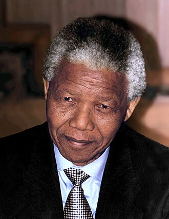

1918-2013
"Do not judge me by my successes, judge me by how many times I fell down and got back up again."
- Neslon Mandela
Nelson Rolihlahla Mandela (July 18, 1918 – December 5, 2013) was a South African anti-apartheid revolutionary, political leader, and philanthropist who served as President of South Africa from 1994 to 1999. He was the country's first black head of state and the first elected in a fully representative democratic election. His presidency marked the end of decades of institutionalized racial segregation and discrimination in South Africa. Mandela is widely regarded as an icon of peace and reconciliation.
Mandela was born in the village of Mvezo in Umtata, then part of South Africa's Cape Province, to the Thembu royal family. After studying law at the University of Fort Hare and the University of Witwatersrand, he worked as a lawyer in Johannesburg. There he became involved in anti-colonial and African nationalist politics, joining the African National Congress (ANC) in 1943 and co-founding its Youth League in 1944.
After the National Party's white-only government established apartheid—a system of racial segregation that privileged whites—Mandela and the ANC committed themselves to its overthrow. Mandela was appointed President of the ANC's Transvaal branch, rising to prominence for his involvement in the 1952 Defiance Campaign and the 1955 Congress of the People. He was repeatedly arrested for seditious activities and, with the ANC leadership, was unsuccessfully prosecuted in the 1956 Treason Trial.
"Education is the most powerful weapon which you can use to change the world."
"I am not a saint, unless you think of a saint as a sinner who keeps on trying."
"For to be free is not merely to cast off one’s chains, but to live in a way that respects and enhances the freedom of others."